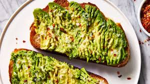

Avocado Toast

Description:
A delicious, healthy, hearty breakfast composed of bread, avocado, and additional ingredients to make this the most optimal breakfast choice.
Ingredients:
- 4 slices whole-grain bread
- 1 avocado, halved and pitted
- 2 tablespoons chopped fresh parsley
- 1 1/2 teaspoons extra-virgin olive oil
- 1/2 lemon, juiced
- 1/2 teaspoon salt
- 1/2 teaspoon ground black pepper
- 1/2 teaspoon garlic powder
- 1/2 teaspoon garlic powder
Steps:
- Toast bread in a toaser or toaster oven
- Scoop avocado into a bowl. Add parsley, olive oil, lemon juice, salt, pepper, onion powder, and garlic powder; mash together using a potato masher. Spread avocado mixture into each piece of toast.